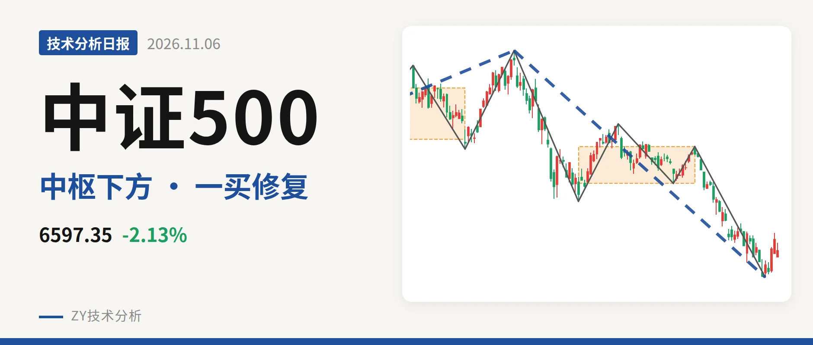
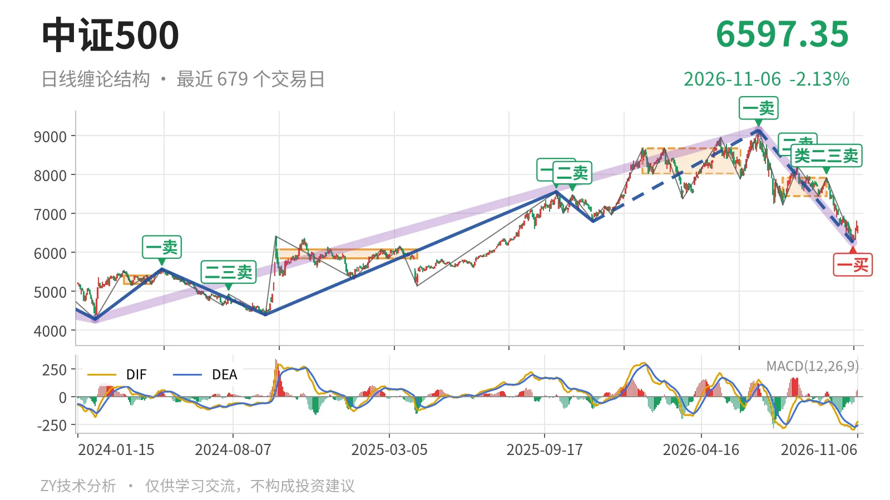
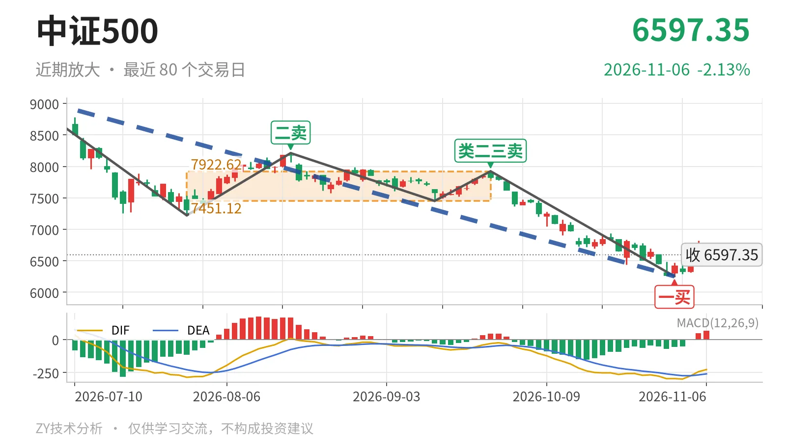

中证500｜一买后反抽未过7451点

最近日线中枢 7451.12—7922.62点，收盘位于中枢之下
一句话：7月下跌段未见底，6597.35点仍在7451点中枢下方
📉 走势结构：7月下跌段仍在延续
7月1日以来的日线下跌段没有结束。更大级别看，2024年2月5日至2026年7月1日的上涨段从4281.24点拉到9147.56点，涨约113.7%，7月见顶后转入反向段。7月1日至11月2日累计跌约31.6%，最低6253.79点。这个下跌段内部已有5笔，11月3日至11月6日只有4根K线，波动还未成笔。近期回升只是下跌段里的未成笔修复。

📍 中枢与位置：收盘低于最近中枢下沿
最新收盘 6597.35点，低于7月30日至9月22日日线笔中枢下沿7451.12点约11.5%。该中枢区间7451.12—7922.62点，中轴7686.87点。相较1月26日至6月8日中枢8014.66—8671.35点，最近中枢下移明显。收盘价还没有回到下沿之上，7月以来的下移结构未被修复。下方更大级别线段中枢5594.30—6263.16点仍在，价格尚未跌进该区域。
🧭 买卖点：一买仅对应笔级修复
11月2日的 6253.79点 构成日线笔级别一买，所在9月22日至11月2日下跌笔已经结束。此后四个交易日最高6819.12点，收6597.35点，反抽未回到7451点。卖点一个比一个低：7月1日一卖9147.56点、8月18日二卖8211.31点、9月22日类二三卖7922.62点。线段级别最近的三买是2025年11月24日6797.50点，其后涨到9147.56点，但当前已跌回该位置下方。因此这里只能先看笔级一买修复，不能直接看成线段级反转。

⚡ 力度比较：面积收缩但DIF不配合
同向比较两段下跌笔：7月1日至7月30日绿柱面积2687，DIF低点-285.2；9月22日至11月2日绿柱面积1782，DIF低点-295.6。价格由7221.95点下探至6253.79点，绿柱面积缩小，但DIF低点反而下移，属于价格新低、DIF同步新低，不是完整的“新低不新弱”。最新DIF为-227.0、柱值64.5，仍在零轴下。11月2日一买更多是面积收缩带来的，DIF并没有同步转强。
🔍 关键位置观察：7451与6253的攻防
若反弹回不到 7451点 上方，结构上仍保留三卖压力，7月1日下跌段就还没有结束。若重新站上7451点，7月30日至9月22日中枢只是被向下离开，更可能转为中枢扩展。下方6253点一线若被跌破，11月2日一买只对应更小级别，跌势延续。当前结构偏弱，弱在收盘6597.35点低于最近中枢下沿约11.5%，DIF在零轴下且修复未过中枢。
⚠️ 本文为基于公开行情数据的缠论技术结构记录，由程序自动计算并生成，仅供学习交流，不构成任何投资建议。市场有风险，投资需谨慎。